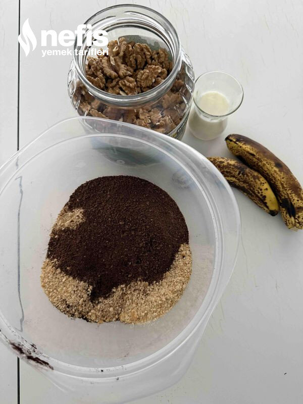

🍽️ 6-8 kişilik⏱️ Hazırlık: 10 dk🏷️ Kurabiye Tarifleri🏷️ Tatlı Kurabiyeler
Malzemeler
- 2 adet muz
- Yarım çay bardağı süt
- 2 kaşık kakao
- 300 gram kadar bisküvi ( rondodan geçirilmiş)
- 1 çay bardağı ceviz kırığı
Hazırlanışı
- Bisküvileri rondodan geçiriyoruz.
- Muzu eziyoruz, süt ilave ediyoruz.
- Bisküvi kırığının bir kısmını ayırıyoruz,kakao ilave ediyoruz ( istenirse kakaolu bisküvi kullanabilirsiniz).
- Bütün malzemeleri karıştırıp elimizle koparıp küçük toplar yapıyoruz ( çok yumuşaksa biraz daha bisküvi ilave edebiliriz) hazırladığımız topları birbirine yapışmaması için bisküvi kırığı veya hindistan cevizine buluyoruz.
- Pişirmeden fırın kullanmadan nefis atıştırmalığımız hazır. Çay, kahve veya limonata ile servis yapabilirsiniz afiyet olsun 😊.